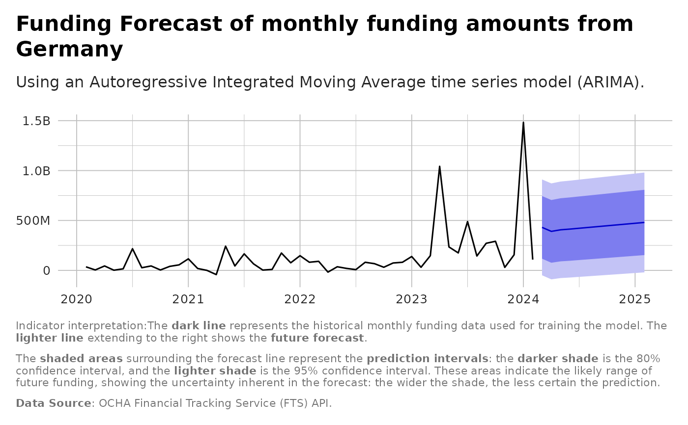

Aggregate historical amounts by month and forecast future funding for a donor or recipient.
Source:R/analysis_funding_forecast.R
analysis_funding_forecast.RdAggregate historical amounts by month and forecast future funding for a donor or recipient.
Usage
analysis_funding_forecast(flows, by = c("donor", "recipient"), name, h = 12)Examples
donor <- "Germany"
forecast_result <- analysis_funding_forecast(flows,
by = "donor",
name = donor)
ggplot2::autoplot(forecast_result$forecast) +
ggplot2::scale_y_continuous(labels = scales::label_number(
scale_cut = scales::cut_short_scale())) +
ggplot2::labs(title = paste0("Funding Forecast of monthly funding amounts from ",
donor),
subtitle= "Using an Autoregressive Integrated Moving Average time
series model (ARIMA).",
x = "Year",
y = "Funding Amount (USD)",
caption = paste0(
"Indicator interpretation:",
"The **dark line** represents the historical monthly funding data used for
training the model. The **lighter line** extending to the right shows
the **future forecast**.",
"\n\n",
"The **shaded areas** surrounding the forecast line represent
the **prediction intervals**: the **darker shade** is the 80% confidence
interval, and the **lighter shade** is the 95% confidence interval.
These areas indicate the likely range of future funding, showing the
uncertainty inherent in the forecast: the wider the shade,
the less certain the prediction.",
"\n\n",
"**Data Source**: OCHA Financial Tracking Service (FTS) API.")) +
unhcrthemes::theme_unhcr(grid = TRUE,
axis = FALSE,
axis_title = FALSE,
legend=TRUE)
